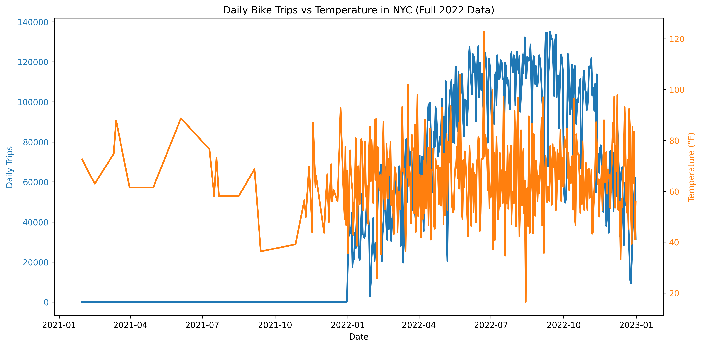
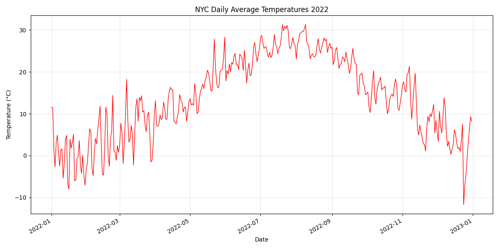
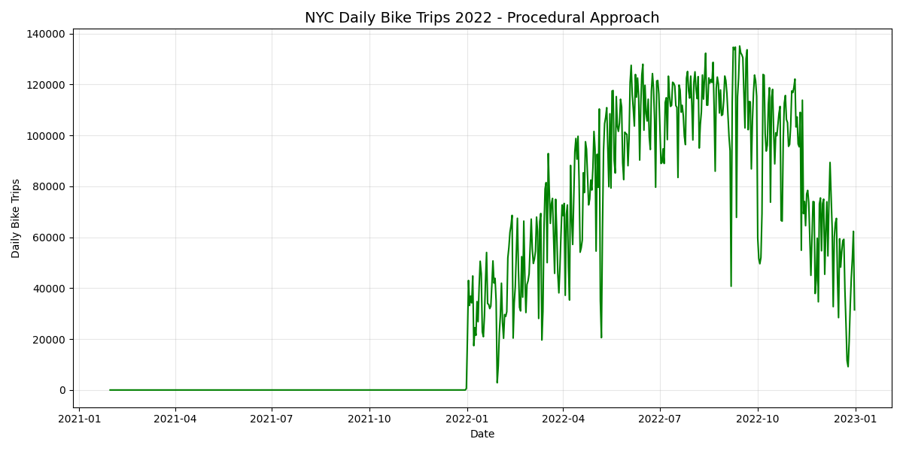
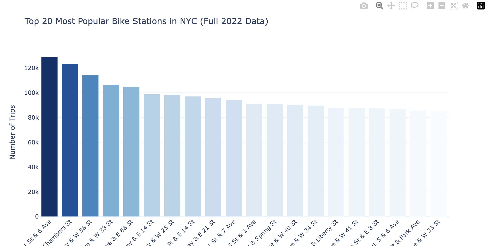
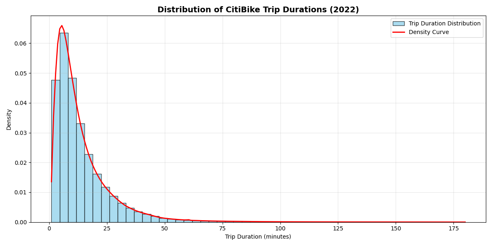

Supply Chain & Operations
NYC Citi Bike Supply Optimisation
Data-Driven Analysis for Bike Share Operational Efficiency
Project Overview
How can we predict demand fluctuations and optimise bike distribution across 1,500+ stations to maximise availability during peak hours and seasons?
An interactive operational dashboard with demand forecasting, station performance analytics, and seasonal scaling recommendations to reduce costs while improving customer satisfaction.
Weather Impact & Seasonal Patterns

Temperature Correlation
Dual-axis analysis showing strong relationship between temperature and daily bike trips throughout 2022.
0.82 correlation — summer peaks at 140,000 trips vs winter lows of 45,000
Seasonal Temperature Patterns
NYC temperature fluctuations throughout 2022 showing clear seasonal cycles driving demand variability.
Temperature ranges from -10°C to 30°C — driving 60% seasonal variation
Daily Trip Patterns — Full Year 2022
Procedural analysis of daily bike trip volumes throughout 2022, showing consistent weekend peaks and the dramatic summer-winter swing.
May–October accounts for 70% of annual ridershipSeasonal Strategy Insights
- 0.82 temperature-usage correlation confirms weather as primary demand driver
- Peak Season (May–Oct) accounts for 70% of annual ridership with 140,000 daily trip peaks
- Winter months (Nov–Apr) show 40–50% lower demand — ideal for maintenance and fleet scaling
- Dynamic pricing during peak summer months could increase revenue 20–25%
Station Performance & Geographic Distribution

Station Usage Concentration
Top 20 stations by trip volume showing significant usage concentration across the 1,500+ station network.
W 21 St & 6 Ave leads with 129,018 trips — top 5 stations handle 3x average volume
Trip Duration Analysis
Distribution of Citi Bike trip durations throughout 2022, revealing the short-distance urban commuting pattern.
Majority of trips under 30 minutes — confirms urban last-mile usageOperational Optimisation Insights
- Top 20 stations require prioritised maintenance and frequent rebalancing — especially during 7–9 AM and 5–7 PM peaks
- Geographic clustering shows Midtown Manhattan and tourist areas have highest utilisation
- Residential neighbourhoods and waterfront corridors represent underserved growth areas
- Winter months are ideal for comprehensive station maintenance and upgrades